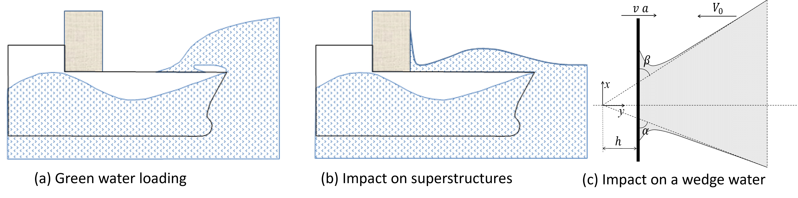

Impact of a plate on an asymmetric water wedge

Abstract
The impacts of a plate on an asymmetric water wedge with constant and varying speeds are studied in this paper by considering the fluid to be incompressible, inviscid, and weightless; the effect of surface tension to be negligible; and the flow to be irrotational. A similarity solution for an impact with a constant speed is derived with the help of Wagner's function and the Schwarz–Christophel mapping technique and then numerically solved by employing an iterative method. An approximate solution is derived for the impact with a varying speed satisfying a power law in time based on the computational fluid dynamics (CFD) results with the volume of fluid (VOF) method. The approximate solution can provide an explicit expression for the pressure acting on the plate. The CFD validation shows that the pressure expression can also be applicable to other cases in which the speed of the plate is not a power law in time.
Read the published article ↗